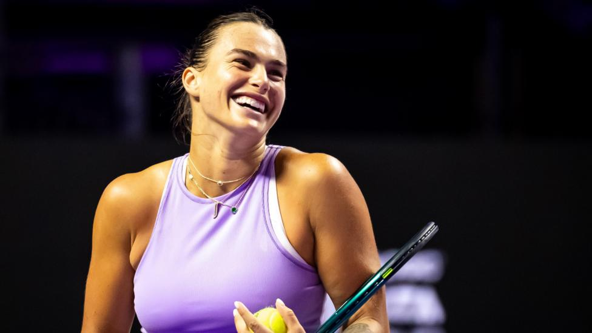
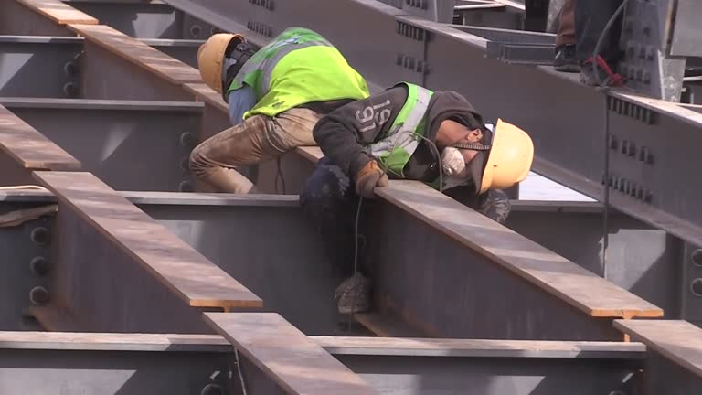

'PLAYERS PLAYING IN PAIN' - GUARDIOLA ON INJURY 'EMERGENCY'
Guardiola said he has doubts over several players for Saturday's trip to Bournemouth after suffering problems in Wednesday's 2-1 EFL Cup defeat at Tottenham.
Savinho went off on a stretcher with an ankle injury, while Manuel Akanji injured his calf in the warm-up.
After the game, Guardiola said he had just 13 fit players with long-term absentees in Rodri and Oscar Bobb, and injury concerns over Kevin de Bruyne, Kyle Walker, Jeremy Doku, Jack Grealish, Akanji and Josko Gvardiol.
On Friday he did not say who could return for the trip to Bournemouth saying he had "many doubts" but confirmed Brazil winger Savinho had not suffered a fracture.
After Bournemouth, City have a Champions League trip to Portugal to face Ruben Amorim’s Sporting and then travel to face Brighton.
"Today, almost all of the players play with pain," said Guardiola. "There are moments when you have to be careful but sometimes you have to play.
"You have to deal with it in modern football or you can't sustain games every three days at a top club."
Guardiola used the example of 22-time Grand Slam champion Rafael Nadal to demonstrate it is not just footballers who are pushing their bodies to the limit.
"Rafa played all of his career with pain," he said. "He played and won I don't know how many Grand Slams."
Guardiola also said he was turning to academy players, adding: "We are using them because we are in an emergency in certain positions."
Playmaker De Bruyne is one of the City stars currently sidelined.
De Bruyne has not featured since injuring his thigh against Inter Milan more than six weeks ago and earlier this week, Guardiola painted a bleak picture around De Bruyne’s likely comeback date.
However, now the news is more optimistic.
"He's getting better," Guardiola said. "The last two or three days the doctor said he made a big step forward in terms of pain."
Muir to be presented with 2015 European Indoors bronze
The Scot was 21 when she finished fourth in the 3,000m in Prague, but was upgraded to bronze in January after race winner Yelena Korobkina of Russia was found guilty of doping offences.
Now 31, Muir will receive her medal at the Lindsays Short Course cross-country event at Kirkcaldy on Saturday.
"I cannot emphasise or explain how much it means to the athletes to have the results rectified and the medals awarded to those who compete within the rules of our sport," said Muir.
"So I am very excited to see that particular European Indoors 2015 medal at Kirkcaldy and it will have a proud place alongside my other sporting accomplishments."
Sviatlana Kudzelich of Belarus has had her silver medal upgraded to gold and Netherlands' Maureen Koster takes silver.
Korobkina was banned for four years from September 2023, and had her results between July 2013 and July 2016 expunged after being found guilty of doping last year.
Who can stop Sabalenka? WTA Finals talking points and vote

Top seed Sabalenka, who won the Australian Open and US Open titles, heads an eight-strong singles field in Riyadh as she looks to lift the title for the first time.
French Open champion Iga Swiatek is aiming to stop Sabalenka finishing as year-end number one, while Coco Gauff, Elena Rybakina and Wimbledon champion Barbora Krejcikova also look to challenge.
Grand Slam semi-finalists Jasmine Paolini, Jessica Pegula and Zheng Qinwen round off the qualifiers.
Former Grand Slam champions Chris Evert and Martina Navratilova said the WTA Finals moving to Saudi Arabia is a "step backward" for women's tennis.
Critics of Saudi Arabia have accused the oil-rich kingdom of using its wealth to invest in sports in a bid to improve its image - known as 'sportswashing'.
The country has heavily invested recently in golf, Formula 1, football and boxing.
Barca aim to pull clear, 'McTomadona' & Amorim begins farewell
Barca striker Robert Lewandowski is the runaway top scorer in La Liga with 14 goals, twice as many as anyone else, including two in last weekend's 4-0 win at Real Madrid.
So should we be surprised by how well boss Hansi Flick has taken to life at the Catalan giants?
"Tactically he has done things very well," Spanish football expert Guillem Balague told the Euro Leagues podcast. "He does owe a bit to Xavi, but that defensive line is the highest in Europe and no other team provokes more offsides. All that is [down to] Hansi Flick."
Second-placed Real Madrid and Villarreal, who are third, have seen their games postponed because of devastating flash foods in the Valencia region.
Madrid were meant to be at bottom club Valencia, while Villarreal had a home game with Rayo Vallecano.
Wobbling Atletico Madrid, who have lost three of their last five games in La Liga and the Champions League, host lowly Las Palmas on Sunday at 13:00 GMT.

Tour de France to take all-French route for first time since 2020
The 112th edition of the Grand Tour will feature 21 stages, starting in Lille on 5 July and ending in Paris on 27 July.
The Tour had raced through Andorra in 2021 while it had Grand Departs in Copenhagen in 2022, Bilbao in 2023 and Florence in 2024.
The 2025 race will also see a return of the Champs-Elysees finale on the 50th anniversary of its first finish there. The Tour finished outside Paris for the first time in its history this year because of the Olympics.
"We decided to bring the Tour home, it was high time after all the foreign starts," said race director Christian Prudhomme.
The Tour, stretching 3,320km (2,063 miles), will feature two time-trials and six mountain-top finishes, with the first part taking place mostly on the plains.
"A week in the plains is not the joy ride it was in the old days. We have cut the sprint stages and laid traps everywhere," Prudhomme said.
"I don't think Thierry Gouvenou, who mapped out the route, left a single climb [untouched] between Lille and Brittany."
UAE Team Emirates' Tadej Pogacar won his third title this year to secure a Tour de France-Giro d'Italia double and is set to battle two-time winner Jonas Vingegaard for the yellow jersey again in 2025.
The women's Tour, meanwhile, has added a ninth stage and will run from 26 July to 3 August.
Poland's Katarzyna Niewiadoma won the third edition of the Tour de France Femmes this year.
Tour de France to take all-French route for first time since 2020
The 112th edition of the Grand Tour will feature 21 stages, starting in Lille on 5 July and ending in Paris on 27 July.
2 hrs ago | Asia
|

Angelica Lopez champions Pinoy talent in Miss International Halloween look
Bb. Pilipinas Angelica Lopez is a real-life Barbie doll for the Miss International pageant’s Halloween party.
15 hrs ago | Asia
|

Repairing Scotland's historic 'Harry Potter' bridge
The Glenfinnan Viaduct is one of the best known landmarks in Scotland but at 123 years old, it's in need of restoration work.
1 hrs ago | Asia
|

‘Hello, Love, Again’ to close 10th Asian World Film Festival
“Hello, Love, Again” — the sequel to the hit 2019 film “Hello, Love, Goodbye” starring Kathryn Bernardo and Alden Richards
10 hrs ago | Asia
|

How Japan's youngest CEO transformed Hello Kitty
As the cute character celebrates her 50th anniversary, the firm behind it is now a trillion yen business.
4 hrs ago | Asia
|